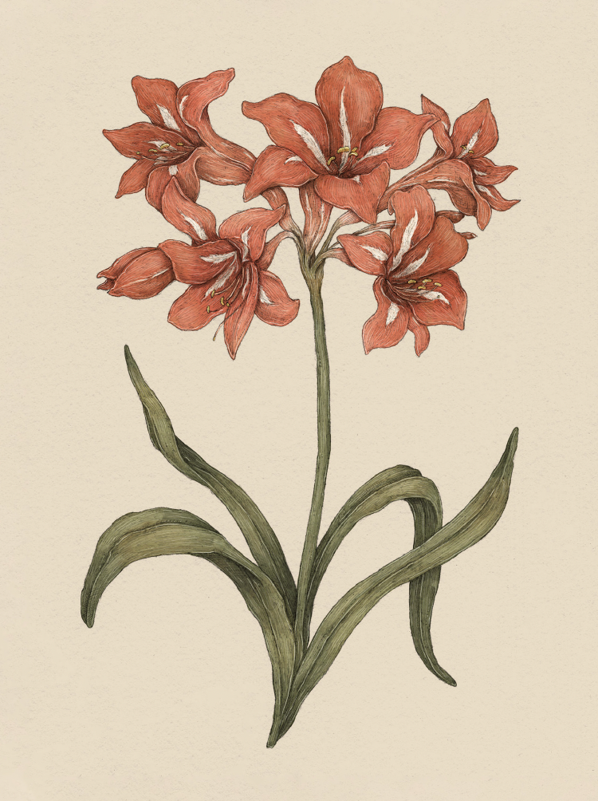

Plate AMARYLLIS
The Language of Flowers
Amaryllis Study

Amaryllis
Hippeastrum
Definition: A strong, showy flower associated in floriography with pride.
Victoria's Definition: Pride
Meaning
Pride
Origin
The Victorians associated amaryllis with pride by virtue of its grand, tall stalks topped with bright
blooms that towered over other flowers. Amaryllis, with its often leafless stems, is also known for
withstanding drought. It is a strong and hearty plant, too prideful to perish under harsh conditions.
Pair With
- Hydrangea to indicate boastful pride
- Clematis to show the recipient should be proud of their cleverness